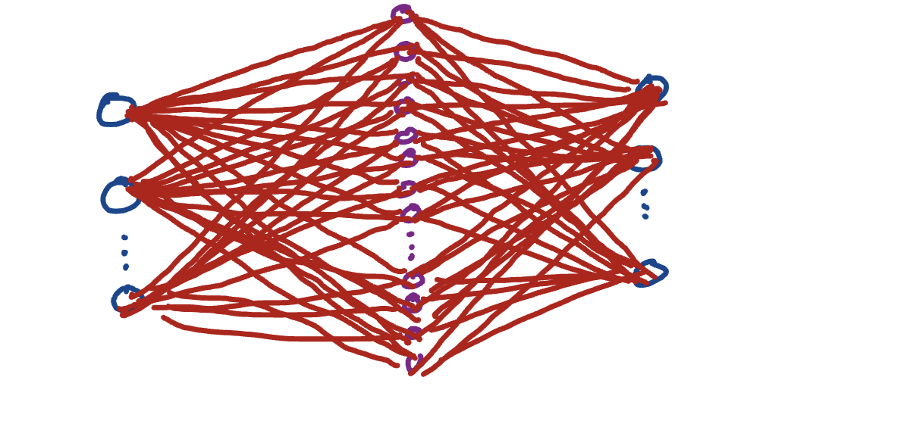
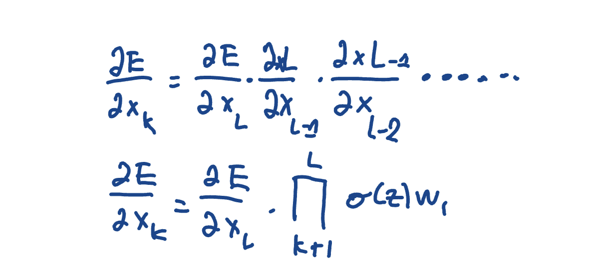
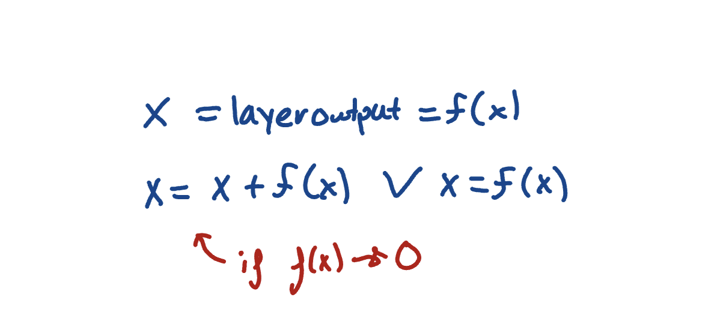
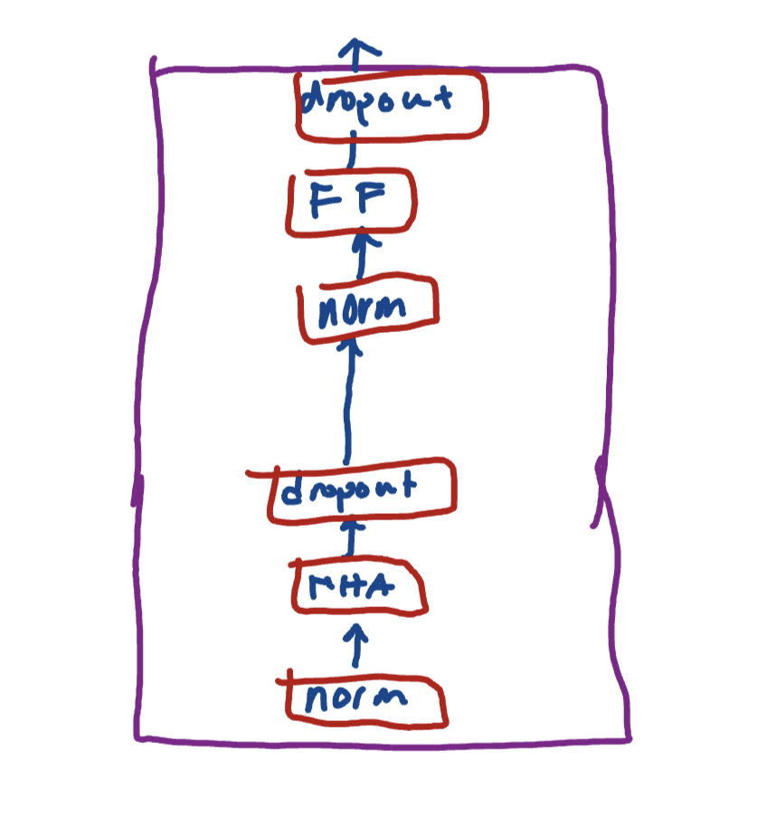

Shortcut Connections, Transformers, and Analytics
August 3, 2025
Briefly, I'll speak about something we covered briefly yesterday. In the Feed Forward module, we have two linear layers including the GELU function. Notice how we mentioned the expansion by a magnitude of 4 -- this magic number that the Attention is All You Need paper people found out. I wanted to add one sentence to kinda black box the entire scenario. Turns out that, by expanding to a higher dimension, the GELU function is able to extract even more complex patterns. This 4 is still magic because it happens to capture complexity without being too granular. It would be interesting to kinda tune this value to see what happens as we go on. But, here is a cool visual to kinda see this expansion from input to output.

Moving forward, let's talk about shortcut connections. For context, during the backpropogation process, we traverse through the feed forward steps now aware of the error of the last forward step. During these steps, we fine tune the learnable parameters of each layer for the next forward step. This tuning process is mathematically done using gradients and the chain rule. Let's look at that:

However, the issue with this is that, depending on the function, we could run into extremely small numbers. negligbily small numbers. in other words, if we take the chain rule of a certain function a large number of times, we can produce a result that approaches 0. This is an issue with fine tuning because, if our gradients are neglibily small, we aren't really learning anything. Additionally, since backpropgation starts at the very last layer, our gradient could be so negligible by the very end that we won't learn anything from some of the very initial layers, which is unfortunaltey where a lot of foundational learning happens. The solution is shortcut connections. This solves the problem by doing some funcdamental checks (which in complete hohesty, i don't completely understand) and adding the input directly to the output. Let's look:

As you can see, if f(x) is appraoching zero (our gradient calculation) we simply add the original input so that we can continue to deeper layers and hopefully still pick up on something important. If we just understand conceptually what is happening, or practically what is happening, the use of shortcut connections solves the problem of gradient dissapearence by preserving the input value. It's a necessary step in backpropogation.
After shortcut connections, we actually reached a pretty solid point in our journey. All we have learned so far culminates in the transformer block, a class that contains normalization, multi-head attention, dropouts and forward steps. Here it is:

Then, this transfomer block is put into the entire architecture and BOOM. We have a model capable of producing text. I'm super excited to finish this chapter and see the first text being generated. SOO Excited!!!: D:D:DD :D